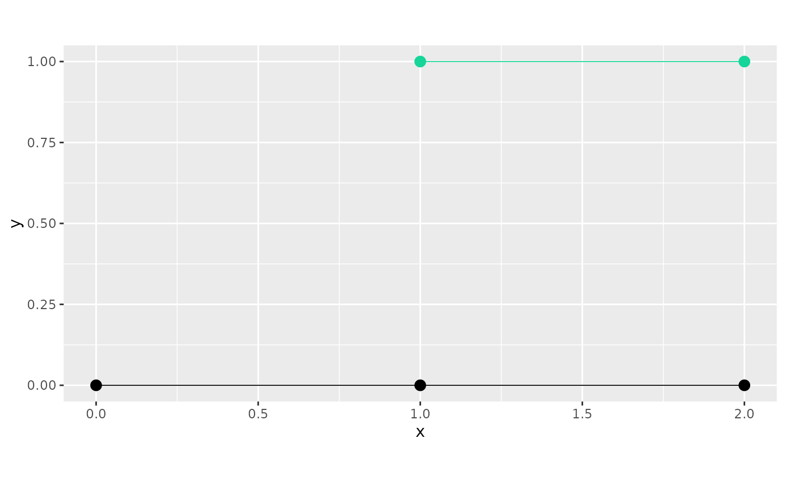

Class representing connected components of a metric graph.
Value
Object of R6Class for creating metric graph components.
Details
A list of metric_graph objects (representing the different
connected components in the full graph) created from vertex and edge matrices,
or from an sp::SpatialLines object where each line is representing and edge.
For more details, see the vignette:
vignette("metric_graph", package = "MetricGraph")
Public fields
graphsList of the graphs representing the connected components.
nThe number of graphs.
sizesNumber of vertices for each of the graphs.
lengthsTotal edge lengths for each of the graphs. Create metric graphs for connected components
Methods
Method new()
Usage
graph_components$new(
edges = NULL,
V = NULL,
E = NULL,
by_length = TRUE,
edge_weights = NULL,
...,
lines = deprecated()
)Arguments
edgesA list containing coordinates as
m x 2matrices (that is, ofmatrixtype) or m x 2 data frames (data.frametype) of sequence of points connected by straightlines. Alternatively, you can also prove an object of typeSpatialLinesDataFrameorSpatialLines(fromsppackage) orMULTILINESTRING(fromsfpackage).Vn x 2 matrix with Euclidean coordinates of the n vertices.
Em x 2 matrix where each row represents an edge.
by_lengthSort the components by total edge length? If
FALSE, the components are sorted by the number of vertices.edge_weightsEither a number, a numerical vector with length given by the number of edges, providing the edge weights, or a
data.framewith the number of rows being equal to the number of edges, where...Additional arguments used when specifying the graphs
lines![[Deprecated]](figures/lifecycle-deprecated.svg) Use
Use edgesinstead.vertex_unitThe unit in which the vertices are specified. The options are 'degrees' (the great circle distance in km), 'km', 'm' and 'miles'. The default is
NULL, which means no unit. However, if you setlength_unit, you need to setvertex_unit.length_unitThe unit in which the lengths will be computed. The options are 'km', 'm' and 'miles'. The default is
vertex_unit. Observe that ifvertex_unitisNULL,length_unitcan only beNULL. Ifvertex_unitis 'degrees', then the default value forlength_unitis 'km'.longlatIf TRUE, then it is assumed that the coordinates are given. in Longitude/Latitude and that distances should be computed in meters. It takes precedence over
vertex_unitandlength_unit, and is equivalent tovertex_unit = 'degrees'andlength_unit = 'm'.toleranceVertices that are closer than this number are merged when constructing the graph (default = 1e-10). If
longlat = TRUE, the tolerance is given in km.
Method plot()
Plots all components.
Examples
library(sp)
edge1 <- rbind(c(0, 0), c(1, 0))
edge2 <- rbind(c(1, 0), c(2, 0))
edge3 <- rbind(c(1, 1), c(2, 1))
edges <- list(edge1, edge2, edge3)
graphs <- graph_components$new(edges)
#> Starting graph creation...
#> LongLat is set to FALSE
#> The current tolerances are:
#> Vertex-Vertex 0.001
#> Vertex-Edge 0.001
#> Edge-Edge 0
#> Setup edges and merge close vertices
#> Snap vertices to close edges
#> Total construction time: 0.93 secs
#> Starting graph creation...
#> LongLat is set to FALSE
#> The current tolerances are:
#> Vertex-Vertex 0.001
#> Vertex-Edge 0.001
#> Edge-Edge 0
#> Setup edges and merge close vertices
#> Snap vertices to close edges
#> Total construction time: 0.92 secs
#> Starting graph creation...
#> LongLat is set to FALSE
#> The current tolerances are:
#> Vertex-Vertex 0.001
#> Vertex-Edge 0.001
#> Edge-Edge 0
#> Setup edges and merge close vertices
#> Total construction time: 0.46 secs
graphs$plot()
